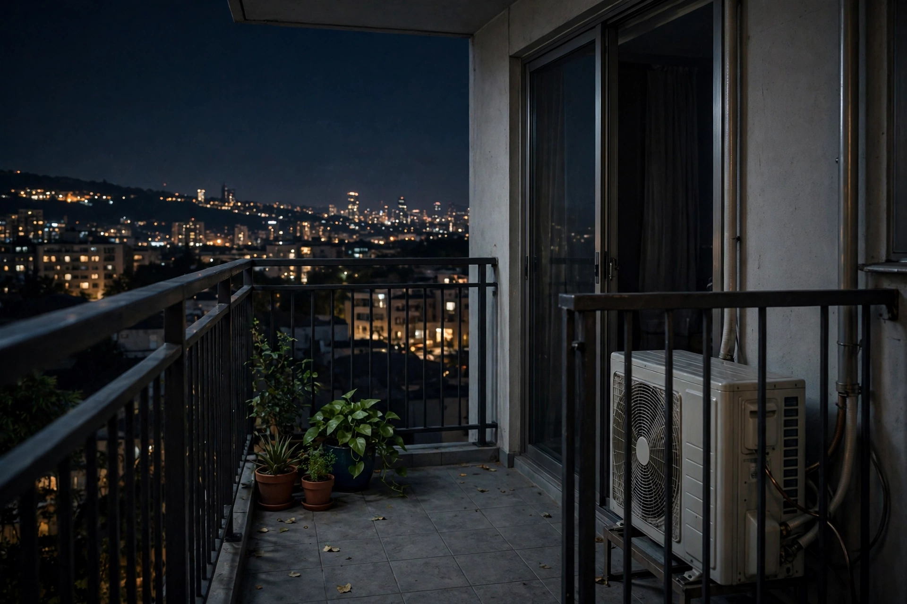

この記事の要点
- 洗濯機や掃除機の音が、隣や下の階に聞こえていないか気になることはありませんか？
- 洗濯機や掃除機の音は、運転音そのものと、床に伝わる振動の、両方で伝わる場合があります。
- まず、時間帯の工夫です。
💡 まず知っておきたいこと：家電の音は、振動と、運転音の両方です
洗濯機や掃除機の音は、運転音そのものと、床に伝わる振動の、両方で伝わる場合があります。洗濯機の脱水時の振動や、掃除機のモーター音は、壁や床を通って、隣の部屋に聞こえる場合があります。音を小さくするには、運転音そのものを小さくすることと、振動の伝わりを減らすことの、両方から考えるのが筋道です。
💡 時間帯の工夫
まず、時間帯の工夫です。夜遅くや早朝の、洗濯機や掃除機の使用は、避けるのが無難です。昼間の時間帯に、まとめて使う、という方法は、周りの人への配慮になります。建物によっては、管理規約で、使用時間帯が決められている場合があります。規約を確認してみてください。
💡 振動と、使い方の工夫
洗濯機の下に、防振マットを敷くことで、振動の伝わりを減らす助けになる場合があります。洗濯機が水平に置かれていないと、振動が大きくなりやすい傾向があります。掃除機は、床の材質に合った設定で使う、家具にぶつけないようにする、といった工夫も、音を小さくする方法です。食洗機や、乾燥機など、ほかの家電についても、運転音が気になる時間帯は、避けるのが無難です。
参考：商品の例（広告）
このページの内容に合う商品の例です。購入する場合は、商品ページの仕様や価格をご確認ください。
洗濯機用防振ゴム「ニューしずか」TW-660（東京防音）を楽天市場で見る（広告）
価格：1,000円（4個入り、2026年10月30日確認時点の表示価格。価格や在庫は変わる場合があります。）
ほかの生活音について
ドアの開け閉めや、引き戸の音、トイレの水を流す音、シャワーの音なども、生活音として伝わる場合があります。ドアは、ゆっくり閉めるだけでも、音が変わります。夜は、シャワーやトイレの使用時間帯も、気にかけてみてください。どれも、音を完全になくすものではありませんが、大きな音を、小さな音に変えることは、できます。
⚠️ 注意
このページの内容は、法律の判断ではありません。家電の故障や、異常な振動や音が気になる場合は、メーカーや、専門家への相談をご検討ください。防振マットなどのグッズで、すべての音を消せるわけではありません。